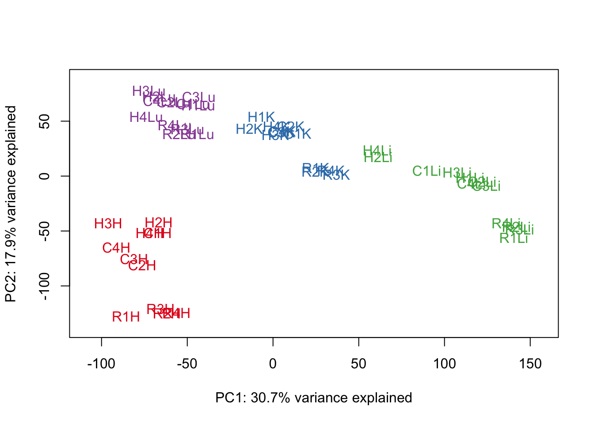

Correlation_between_technical_factors_in_best_set_stringent_filtering
Lauren Blake
August 10, 2016
- Filtering for lowly expressed genes
- GC content normalization
- Correction for library size
- Voom and corfit
- Visualization
- Testing for confounders
- Best set analysis (GLMnet)
- Distribution of genes with and without a particular techinical factor in the best set
- Description of the best set of technical factors
- Quantile Analysis
In this analysis, we will adopt an EXTREMELY stringent filtering criteria for eliminating lowly expressed genes. We will then see if this change affects the relationship between normalized expression values and the number of technical factors.
# Load libraries
library("gplots")##
## Attaching package: 'gplots'## The following object is masked from 'package:stats':
##
## lowesslibrary("ggplot2")
library("formattable")
library("RColorBrewer")
library("scales")##
## Attaching package: 'scales'## The following objects are masked from 'package:formattable':
##
## comma, percent, scientificlibrary("edgeR")## Loading required package: limmasource("~/Reg_Evo_Primates/ashlar-trial/analysis/functions.R")
library("glmnet")## Loading required package: Matrix## Loading required package: foreach## Loaded glmnet 2.0-5library("formattable")
# Load colors
colors <- colorRampPalette(c(brewer.pal(9, "Blues")[1],brewer.pal(9, "Blues")[9]))(100)
pal <- c(brewer.pal(9, "Set1"), brewer.pal(8, "Set2"), brewer.pal(12, "Set3"))
#Load the data
#Raw counts
counts_genes <- read.delim("~/Reg_Evo_Primates/ashlar-trial/data/counts_genes.txt")
dim(counts_genes)## [1] 30030 48 #Sample information
samples <- read.csv("~/Reg_Evo_Primates/ashlar-trial/data/Sample_info_RNAseq.csv")
labels <- paste(samples$Species, samples$Tissue, sep=" ")Filtering for lowly expressed genes
Here, we will use a stringent cutoff of log2(CPM) > 1.5 in at least half (24) of the samples.
# Set expression cutoff and sample number
expr_cutoff <- 1.5
sample_number <- 24
# log2(CPM) adjusted for library sizes
dge_original <- DGEList(counts=as.matrix(counts_genes), genes=rownames(counts_genes), group = as.character(t(labels)))
dge_original <- calcNormFactors(dge_original)
cpm <- cpm(dge_original, normalized.lib.sizes=TRUE, log=TRUE, prior.count = 0.25)
head(tmm_cpm)## C1H C1K C1Li C1Lu C2H C2K
## ENSG00000000003 4.567373 6.447533 8.256017 5.424906 4.6294354 6.011805
## ENSG00000000005 2.416000 -1.580095 -1.416352 -3.341347 0.6076502 -1.343658
## ENSG00000000419 5.840304 5.181024 5.932747 5.421890 5.6238128 5.035649
## ENSG00000000457 4.558401 5.177784 5.897776 4.915903 4.7768304 5.224658
## ENSG00000000460 1.505008 1.832930 2.075455 2.252356 1.6034149 1.903546
## ENSG00000000938 5.610063 3.782664 5.086430 7.494062 2.4759548 4.113386
## C2Li C2Lu C3H C3K C3Li
## ENSG00000000003 7.997439 4.518180 4.896187 6.34935971 7.711220
## ENSG00000000005 -2.074003 -2.073564 -1.336243 -0.08391333 -3.805819
## ENSG00000000419 5.781412 5.153538 5.656791 5.12246958 6.340540
## ENSG00000000457 6.513238 4.939606 4.599465 5.14729901 6.424910
## ENSG00000000460 2.292856 1.977228 1.561216 1.40473716 2.271103
## ENSG00000000938 5.356426 8.037124 4.945957 4.16655579 5.131295
## C3Lu C4H C4K C4Li C4Lu H1H
## ENSG00000000003 5.825590 4.200148 6.445727 8.368230 5.362211 6.761084
## ENSG00000000005 -3.821423 3.812407 -1.533431 -3.682999 -2.532144 -6.806579
## ENSG00000000419 5.546317 5.749810 5.199950 5.796045 5.253771 6.134200
## ENSG00000000457 5.118596 4.609688 4.965236 6.512006 5.195795 5.269211
## ENSG00000000460 2.074325 1.421009 1.768841 2.121422 2.408692 5.108993
## ENSG00000000938 7.109951 3.603345 3.563260 4.494896 7.649746 4.442136
## H1K H1Li H1Lu H2H H2K H2Li
## ENSG00000000003 6.804563 6.546031 5.007223 3.704707 7.1262303 6.618244
## ENSG00000000005 4.852944 -6.806579 -2.246586 -3.903089 0.3878291 -6.806579
## ENSG00000000419 5.528057 6.052945 5.719069 5.629978 5.3823470 5.817742
## ENSG00000000457 4.224917 4.923772 4.410342 3.430292 4.0791476 4.430133
## ENSG00000000460 2.706694 4.959282 3.226274 1.915724 1.8992527 2.637193
## ENSG00000000938 3.999256 4.449888 7.786373 5.583692 3.6609998 5.969598
## H2Lu H3H H3K H3Li H3Lu
## ENSG00000000003 4.123641 3.4819522 7.018616442 7.646317 5.182205
## ENSG00000000005 -6.806579 -6.8065788 0.009014279 -6.806579 -6.806579
## ENSG00000000419 5.255982 5.6892431 5.781990575 6.127195 4.901956
## ENSG00000000457 4.144389 4.3789705 4.649846700 4.904103 3.891301
## ENSG00000000460 2.495636 -0.1372257 2.917685496 3.148170 2.349467
## ENSG00000000938 6.911422 4.0351829 2.570227284 5.651445 6.804843
## H4H H4K H4Li H4Lu R1H
## ENSG00000000003 4.298917 6.3173589 6.492465 4.430781 4.277450
## ENSG00000000005 -2.885525 -0.4099302 -6.806579 -4.381165 -6.806579
## ENSG00000000419 6.259288 5.5536660 5.736507 5.317749 5.385154
## ENSG00000000457 3.327086 4.0330630 5.078478 4.140972 4.206293
## ENSG00000000460 1.644565 1.9287495 3.040136 2.571756 1.205569
## ENSG00000000938 4.933243 3.7664364 6.801466 8.216330 1.758374
## R1K R1Li R1Lu R2H R2K
## ENSG00000000003 6.865893 8.2379489 5.862719 4.587429 7.080213
## ENSG00000000005 -6.806579 -3.5812300 -2.947388 -2.950144 -2.392446
## ENSG00000000419 5.324798 5.7295743 4.834230 5.257598 4.989863
## ENSG00000000457 4.957819 5.0471784 4.784547 4.273744 5.100864
## ENSG00000000460 1.488300 -0.2693252 2.427739 1.377881 1.266081
## ENSG00000000938 2.497210 3.7078234 6.462495 2.289137 2.627796
## R2Li R2Lu R3H R3K R3Li
## ENSG00000000003 8.590210 5.596179 4.447299 7.118296 8.159964
## ENSG00000000005 -1.254679 -4.918947 -4.250247 -4.518792 -3.157713
## ENSG00000000419 5.673041 4.822969 5.441223 5.319612 5.947843
## ENSG00000000457 5.461042 5.207134 4.219708 5.092042 5.317075
## ENSG00000000460 1.446891 2.336439 1.634827 1.826680 1.371274
## ENSG00000000938 3.622173 6.524890 2.849036 2.219476 3.593860
## R3Lu R4H R4K R4Li R4Lu
## ENSG00000000003 5.443878 4.822954 7.048140 7.679671 5.347353
## ENSG00000000005 -3.806700 -2.535407 -2.099889 -4.589602 -6.806579
## ENSG00000000419 4.946500 5.357811 5.169441 5.438501 5.027872
## ENSG00000000457 5.155818 4.440126 5.098001 5.292544 4.814466
## ENSG00000000460 2.567598 1.018736 1.463169 1.508474 2.833647
## ENSG00000000938 6.836275 2.405256 2.264315 4.483635 6.820965hist(tmm_cpm, main = "log2(CPM) values in unfiltered data (n = 48 samples)", breaks = 100, ylim = c(0, 50000), xlab = "log2(CPM) values")
abline(v = expr_cutoff, col = "red", lwd = 3)cpm_filtered <- cpm[rowSums(cpm > expr_cutoff) >= sample_number, ]
dim(cpm_filtered)## [1] 12184 48This filtering criteria will leave us with 12184 genes.
GC content normalization
In the previous analysis, we demonstrated that GC content normalization changes the gene counts very minimally. Therefore, we will not perform GC content normalization here.
Correction for library size
# Find the original counts of all of the genes that fit the criteria
inshared_lists = row.names(counts_genes) %in% rownames(cpm_filtered)
inshared_lists_data <- as.data.frame(inshared_lists)
counts_genes_in <- cbind(counts_genes, inshared_lists_data)
counts_genes_in_cutoff <- subset(counts_genes_in, inshared_lists_data == "TRUE")
counts_genes_in_cutoff <- counts_genes_in_cutoff[,1:48]
dim(counts_genes_in_cutoff)## [1] 12184 48# Remove H1H (sample 17) from the data
counts_genes_in_cutoff <- counts_genes_in_cutoff[,-17]
dim(counts_genes_in_cutoff)## [1] 12184 47# Remove H1H (sample 17) from labels
samples <- samples[-17,]
labels <- paste(samples$Species, samples$Tissue, sep=" ")
# Take the TMM of the genes that meet the criteria
dge_in_cutoff <- DGEList(counts=as.matrix(counts_genes_in_cutoff), genes=rownames(counts_genes_in_cutoff), group = as.character(t(labels)))
dge_in_cutoff <- calcNormFactors(dge_in_cutoff)
cpm_in_cutoff <- cpm(dge_in_cutoff, normalized.lib.sizes=TRUE, log=TRUE, prior.count = 0.25)
head(cpm_in_cutoff)## C1H C1K C1Li C1Lu C2H C2K
## ENSG00000000003 4.569101 6.484481 8.260731 5.481561 4.686636 6.076562
## ENSG00000000419 5.842023 5.217972 5.937465 5.478545 5.681016 5.100404
## ENSG00000000457 4.560130 5.214732 5.902494 4.972557 4.834031 5.289413
## ENSG00000000460 1.506846 1.869887 2.080244 2.308985 1.660573 1.968249
## ENSG00000000938 5.611783 3.819613 5.091152 7.550720 2.533135 4.178135
## ENSG00000000971 6.877100 4.451824 11.368082 6.100181 6.135730 4.887383
## C2Li C2Lu C3H C3K C3Li C3Lu
## ENSG00000000003 8.029471 4.564496 4.915377 6.406310 7.784365 5.875983
## ENSG00000000419 5.813444 5.199855 5.675979 5.179418 6.413682 5.596709
## ENSG00000000457 6.545270 4.985922 4.618657 5.204247 6.498053 5.168988
## ENSG00000000460 2.324903 2.023533 1.580465 1.461635 2.344190 2.124699
## ENSG00000000938 5.388459 8.083442 4.965147 4.223500 5.204433 7.160345
## ENSG00000000971 11.387090 6.246512 5.606820 4.941061 11.420166 5.990777
## C4H C4K C4Li C4Lu H1K H1Li
## ENSG00000000003 4.235754 6.503717 8.453727 5.430223 6.864660 6.576082
## ENSG00000000419 5.785414 5.257938 5.881536 5.321782 5.588152 6.082997
## ENSG00000000457 4.645293 5.023223 6.597499 5.263806 4.285007 4.953825
## ENSG00000000460 1.456629 1.826787 2.206829 2.476664 2.766766 4.989335
## ENSG00000000938 3.638952 3.621239 4.580376 7.717763 4.059344 4.479943
## ENSG00000000971 6.845219 5.957838 11.330910 6.421417 6.585546 11.216641
## H1Lu H2H H2K H2Li H2Lu H3H
## ENSG00000000003 5.099004 3.681088 7.205567 6.638944 4.181104 3.54360583
## ENSG00000000419 5.810855 5.606326 5.461678 5.838444 5.313450 5.75090978
## ENSG00000000457 4.502116 3.406682 4.158467 4.450840 4.201852 4.44063190
## ENSG00000000460 3.318021 1.892216 1.978501 2.657920 2.553081 -0.07576077
## ENSG00000000938 7.878166 5.560041 3.740312 5.990299 6.968892 4.09684184
## ENSG00000000971 7.561408 6.363288 4.736443 9.409472 7.310814 6.22507411
## H3K H3Li H3Lu H4H H4K H4Li
## ENSG00000000003 7.091569 7.735945 5.290097 4.284175 6.371782 6.590115
## ENSG00000000419 5.854940 6.216818 5.009845 6.244527 5.608088 5.834153
## ENSG00000000457 4.722790 4.993719 3.999170 3.312369 4.087480 5.176119
## ENSG00000000460 2.990603 3.237751 2.457261 1.629959 1.983141 3.137731
## ENSG00000000938 2.643134 5.741066 6.912746 4.918491 3.820852 6.899117
## ENSG00000000971 5.313255 10.346500 7.124250 6.927089 6.032612 10.197598
## H4Lu R1H R1K R1Li R1Lu R2H
## ENSG00000000003 4.463456 4.356369 6.932932 8.3343252 5.915547 4.625348
## ENSG00000000419 5.350423 5.464082 5.391834 5.8259430 4.887057 5.295517
## ENSG00000000457 4.173647 4.285211 5.024853 5.1435415 4.837373 4.311664
## ENSG00000000460 2.604439 1.284359 1.555258 -0.1735364 2.480549 1.415808
## ENSG00000000938 8.249002 1.837210 2.564210 3.8041639 6.515323 2.327061
## ENSG00000000971 8.277236 4.027912 6.576019 12.1322643 7.445976 5.571685
## R2K R2Li R2Lu R3H R3K R3Li
## ENSG00000000003 7.134183 8.640291 5.654663 4.469039 7.166047 8.202424
## ENSG00000000419 5.043831 5.723120 4.881450 5.462958 5.367362 5.990303
## ENSG00000000457 5.154832 5.511121 5.265617 4.241449 5.139792 5.359535
## ENSG00000000460 1.320003 1.496941 2.394895 1.656614 1.874414 1.413727
## ENSG00000000938 2.681748 3.672247 6.583375 2.870792 2.267214 3.636318
## ENSG00000000971 6.778700 11.778253 7.231996 5.150488 6.054215 12.087241
## R3Lu R4H R4K R4Li R4Lu
## ENSG00000000003 5.453490 4.892515 7.094406 7.705335 5.361237
## ENSG00000000419 4.956114 5.427374 5.215706 5.464168 5.041757
## ENSG00000000457 5.165431 4.509684 5.144266 5.318210 4.828352
## ENSG00000000460 2.577251 1.088179 1.509418 1.534185 2.847559
## ENSG00000000938 6.845883 2.474777 2.310571 4.509304 6.834845
## ENSG00000000971 7.258258 6.408881 6.469038 11.695479 7.298202head(summary(cpm_in_cutoff))## C1H C1K C1Li C1Lu
## Min. :-6.766 Min. :-6.766 Min. :-6.766 Min. :-6.766
## 1st Qu.: 3.314 1st Qu.: 3.393 1st Qu.: 3.247 1st Qu.: 3.321
## Median : 4.730 Median : 4.803 Median : 4.763 Median : 4.795
## Mean : 4.660 Mean : 4.724 Mean : 4.707 Mean : 4.668
## 3rd Qu.: 6.027 3rd Qu.: 6.063 3rd Qu.: 6.126 3rd Qu.: 6.046
## Max. :14.883 Max. :13.234 Max. :17.511 Max. :14.327
## C2H C2K C2Li C2Lu
## Min. :-6.766 Min. :-6.766 Min. :-6.766 Min. :-6.766
## 1st Qu.: 3.206 1st Qu.: 3.448 1st Qu.: 3.197 1st Qu.: 3.377
## Median : 4.724 Median : 4.804 Median : 4.793 Median : 4.769
## Mean : 4.637 Mean : 4.724 Mean : 4.699 Mean : 4.678
## 3rd Qu.: 6.081 3rd Qu.: 5.992 3rd Qu.: 6.169 3rd Qu.: 6.016
## Max. :15.277 Max. :13.038 Max. :17.490 Max. :13.909
## C3H C3K C3Li C3Lu
## Min. :-6.766 Min. :-6.766 Min. :-6.766 Min. :-6.766
## 1st Qu.: 3.150 1st Qu.: 3.423 1st Qu.: 3.031 1st Qu.: 3.279
## Median : 4.673 Median : 4.793 Median : 4.744 Median : 4.742
## Mean : 4.589 Mean : 4.708 Mean : 4.604 Mean : 4.629
## 3rd Qu.: 6.084 3rd Qu.: 6.018 3rd Qu.: 6.186 3rd Qu.: 6.045
## Max. :16.102 Max. :12.591 Max. :16.966 Max. :13.996
## C4H C4K C4Li C4Lu
## Min. :-6.766 Min. :-6.766 Min. :-6.766 Min. :-6.766
## 1st Qu.: 3.233 1st Qu.: 3.390 1st Qu.: 3.159 1st Qu.: 3.327
## Median : 4.725 Median : 4.780 Median : 4.782 Median : 4.738
## Mean : 4.615 Mean : 4.703 Mean : 4.696 Mean : 4.641
## 3rd Qu.: 6.037 3rd Qu.: 6.015 3rd Qu.: 6.183 3rd Qu.: 5.994
## Max. :14.757 Max. :13.480 Max. :17.778 Max. :12.618
## H1K H1Li H1Lu H2H
## Min. :-6.766 Min. :-6.766 Min. :-6.766 Min. :-6.766
## 1st Qu.: 3.393 1st Qu.: 3.205 1st Qu.: 3.418 1st Qu.: 3.135
## Median : 4.788 Median : 4.781 Median : 4.747 Median : 4.729
## Mean : 4.699 Mean : 4.682 Mean : 4.684 Mean : 4.600
## 3rd Qu.: 5.993 3rd Qu.: 6.127 3rd Qu.: 5.938 3rd Qu.: 6.101
## Max. :12.908 Max. :17.031 Max. :13.004 Max. :14.363
## H2K H2Li H2Lu H3H
## Min. :-6.766 Min. :-6.766 Min. :-6.766 Min. :-6.766
## 1st Qu.: 3.303 1st Qu.: 3.235 1st Qu.: 3.395 1st Qu.: 3.244
## Median : 4.770 Median : 4.767 Median : 4.735 Median : 4.744
## Mean : 4.624 Mean : 4.656 Mean : 4.664 Mean : 4.562
## 3rd Qu.: 6.013 3rd Qu.: 6.095 3rd Qu.: 5.985 3rd Qu.: 6.044
## Max. :14.007 Max. :15.156 Max. :12.586 Max. :15.541
## H3K H3Li H3Lu H4H
## Min. :-6.766 Min. :-6.766 Min. :-4.772 Min. :-6.766
## 1st Qu.: 3.461 1st Qu.: 3.121 1st Qu.: 3.416 1st Qu.: 3.276
## Median : 4.811 Median : 4.769 Median : 4.751 Median : 4.736
## Mean : 4.715 Mean : 4.659 Mean : 4.702 Mean : 4.663
## 3rd Qu.: 6.011 3rd Qu.: 6.184 3rd Qu.: 6.005 3rd Qu.: 6.077
## Max. :13.703 Max. :17.347 Max. :13.596 Max. :15.337
## H4K H4Li H4Lu R1H
## Min. :-4.765 Min. :-6.766 Min. :-6.766 Min. :-6.766
## 1st Qu.: 3.454 1st Qu.: 3.313 1st Qu.: 3.405 1st Qu.: 3.049
## Median : 4.820 Median : 4.800 Median : 4.707 Median : 4.708
## Mean : 4.740 Mean : 4.734 Mean : 4.686 Mean : 4.526
## 3rd Qu.: 6.028 3rd Qu.: 6.132 3rd Qu.: 5.980 3rd Qu.: 6.139
## Max. :14.045 Max. :15.784 Max. :12.901 Max. :15.791
## R1K R1Li R1Lu R2H
## Min. :-6.766 Min. :-6.766 Min. :-6.766 Min. :-6.766
## 1st Qu.: 3.292 1st Qu.: 3.012 1st Qu.: 3.348 1st Qu.: 3.031
## Median : 4.778 Median : 4.756 Median : 4.749 Median : 4.684
## Mean : 4.636 Mean : 4.595 Mean : 4.623 Mean : 4.532
## 3rd Qu.: 6.082 3rd Qu.: 6.223 3rd Qu.: 6.006 3rd Qu.: 6.104
## Max. :13.870 Max. :18.397 Max. :14.299 Max. :15.757
## R2K R2Li R2Lu R3H
## Min. :-6.766 Min. :-6.766 Min. :-6.766 Min. :-6.766
## 1st Qu.: 3.364 1st Qu.: 3.040 1st Qu.: 3.396 1st Qu.: 3.097
## Median : 4.786 Median : 4.755 Median : 4.744 Median : 4.705
## Mean : 4.676 Mean : 4.609 Mean : 4.646 Mean : 4.589
## 3rd Qu.: 6.068 3rd Qu.: 6.216 3rd Qu.: 5.990 3rd Qu.: 6.112
## Max. :13.723 Max. :18.310 Max. :13.311 Max. :15.759
## R3K R3Li R3Lu R4H
## Min. :-6.766 Min. :-6.766 Min. :-6.766 Min. :-6.766
## 1st Qu.: 3.239 1st Qu.: 3.014 1st Qu.: 3.378 1st Qu.: 3.112
## Median : 4.804 Median : 4.774 Median : 4.747 Median : 4.700
## Mean : 4.629 Mean : 4.601 Mean : 4.633 Mean : 4.572
## 3rd Qu.: 6.121 3rd Qu.: 6.239 3rd Qu.: 6.007 3rd Qu.: 6.132
## Max. :14.794 Max. :18.618 Max. :13.580 Max. :15.705
## R4K R4Li R4Lu
## Min. :-6.766 Min. :-6.766 Min. :-6.766
## 1st Qu.: 3.309 1st Qu.: 3.115 1st Qu.: 3.343
## Median : 4.797 Median : 4.802 Median : 4.746
## Mean : 4.659 Mean : 4.642 Mean : 4.621
## 3rd Qu.: 6.105 3rd Qu.: 6.220 3rd Qu.: 6.016
## Max. :14.337 Max. :17.952 Max. :13.962hist(cpm_in_cutoff, xlab = "Log2(CPM)", main = "Log2(CPM) values for genes meeting the filtering criteria", breaks = 100 )This looks more normally distributed than the genes in our less stringent filtering criteria.
Making density plots:
all_hearts <- c(1,5,9,13, 20,24,28,32,36,40,44)
all_kidneys <- c(2,6,10,14,17, 21,25,29,33,37,41,45)
all_livers <- c(3,7,11,15,18, 22,26,30,34,38,42,46)
all_lungs <- c(4,8,12,16,19, 23,27,31,35,39,43,47)
col = as.data.frame(pal[as.numeric(samples$Species)])
col_hearts = col[all_hearts,]
col_kidneys = col[all_kidneys, ]
col_livers = col[all_livers, ]
col_lungs = col[all_lungs, ]
group = as.data.frame(samples$Species)
group_hearts = group[all_hearts, ]
group_kidneys = group[all_kidneys, ]
group_livers = group[all_livers, ]
group_lungs = group[all_lungs, ]
plotDensities(cpm_in_cutoff[,all_hearts], col=col_hearts, legend = FALSE, main = "Density plot for genes passing filtering criteria (all hearts)")
legend('topright', legend = levels(group_hearts), col = levels(col_hearts), pch = 20)plotDensities(cpm_in_cutoff[,1:16], group=samples$Tissue, col=pal[as.numeric(samples$Tissue)], legend = "topright", main = "Density plot for genes passing filtering criteria (all chimpanzees)")For this preliminary analysis, I will skip the GC content normalization, particularly because it had a minimial effect on the raw counts in the original analysis.
Voom and corfit
## Voom requires a design matrix as input
## To make contrasts easier to formulate, we rename factors species and tissue in a single factor
condition <- factor(paste(samples$Species,samples$Tissue,sep="."))
design <- model.matrix(~ 0 + condition)
colnames(design) <- gsub("condition", "", dput(colnames(design)))## c("conditionchimpanzee.heart", "conditionchimpanzee.kidney",
## "conditionchimpanzee.liver", "conditionchimpanzee.lung", "conditionhuman.heart",
## "conditionhuman.kidney", "conditionhuman.liver", "conditionhuman.lung",
## "conditionrhesus macaque.heart", "conditionrhesus macaque.kidney",
## "conditionrhesus macaque.liver", "conditionrhesus macaque.lung"
## )# Voom with individual as a random variable
cpm.voom.cyclic <- voom(dge_in_cutoff, design, normalize.method="cyclicloess", plot=T)corfit <- duplicateCorrelation(cpm.voom.cyclic, design, block=samples$Individual)
# corfit$consensus = 0.2006188
# Final voom on filtered data
cpm.voom.cyclic <- voom(dge_in_cutoff, design, normalize.method="cyclicloess", plot=TRUE, block=samples$Individual, correlation=corfit$consensus)boxplot(cpm.voom.cyclic$E, col = pal[as.numeric(samples$Tissue)])
plotDensities(cpm.voom.cyclic[,all_hearts], col = col_hearts, legend = FALSE, main = "Normalized expression data for genes passing filtering criteria (all hearts)")
legend('topright', legend = levels(group_hearts), col = levels(col_hearts), pch = 20)# Save the data
write.table(cpm.voom.cyclic$E,file="/Users/LEB/Reg_Evo_Primates/ashlar-trial/data/PC_cpm_cyclic_loess_random_var_gene_exp",sep="\t", col.names = T, row.names = T)Visualization
# PCA
pca_genes <- prcomp(t(cpm.voom.cyclic$E), scale = F)
scores <- pca_genes$x
for (n in 1:2){
col.v <- pal[as.integer(samples$Tissue)]
plot_scores(pca_genes, scores, n, n+1, col.v)
}
# Clustering (original code from Julien Roux)
cors <- cor(cpm.voom.cyclic$E, method="spearman", use="pairwise.complete.obs")
heatmap.2( cors, scale="none", col = colors, margins = c(12, 12), trace='none', denscol="white", labCol=labels, ColSideColors=pal[as.integer(as.factor(samples$Species))], RowSideColors=pal[as.integer(as.factor(samples$Tissue))+9], cexCol = 0.2 + 1/log10(15), cexRow = 0.2 + 1/log10(15))# Note: Pattern is robust to type of correlation method (spearman or pearson).Testing for confounders
Given the similarities in the clustering patterns between the original analysis and this one, we are going to assume that the same group of technical factors that were (partially) confounded with the tissue or species in the original analysis are the same in this analysis. Therefore, we will skip to the best set analysis.
Best set analysis (GLMnet)
We will run lasso regression to determine the best set of factors for each gene.
expression_t <- t(cpm.voom.cyclic$E)
# Load variables data
samples <- read.csv("~/Reg_Evo_Primates/ashlar-trial/data/RNA_seq_info.csv")
samples <- as.data.frame(samples)
#Use the biological variables (tissue and species) and the technical variables that were correlated with tissue and species
tech_var <- c(3:8,11,12,16:24)
#Add technical variables
RNA_seq_tech_var <- samples[,tech_var]
dim(RNA_seq_tech_var)## [1] 47 17# Take out 1 row because contains an "NA"
RNA_seq_tech_var <- RNA_seq_tech_var[-31,]
expression_t <- expression_t[-31,]
#Set up the matrix of all technical variables
RNA_species <- model.matrix(~ -1+Species, RNA_seq_tech_var)
RNA_tissue <- model.matrix(~ -1+Tissue, RNA_seq_tech_var)
RNA_extra <- model.matrix(~ -1+RNA.extraction.date, RNA_seq_tech_var)
Multi_mix <- model.matrix(~ -1+Multiplexing.Mixes.Code, RNA_seq_tech_var)
cat_exp_var <- cbind(RNA_species, RNA_tissue, RNA_extra, Multi_mix)
num_exp_var <- RNA_seq_tech_var[,7:17]
num_exp_var <- num_exp_var[,-6]
# Make the matrix with biological and technical variables
exp_var_no_NA <- cbind(cat_exp_var, num_exp_var)
exp_var_no_NA <- as.matrix(exp_var_no_NA)
dim(exp_var_no_NA)## [1] 46 27Run GLMnet
#Run glmnet on all the genes, save the coef. Repeat for each gene.
#Alpha = 1 to allow for lasso regression because of correlations between the explanatory variables
lambda_min <- array(NA, dim= c(1, 12184))
# Do not penalize tissue and species
p.fac = rep(1,28)
p.fac[c(1:7)] = 0
l = 1
for(l in 1:length(lambda_min)){
resp_var <- as.matrix(expression_t[,l])
glmmod<-cv.glmnet(x=exp_var_no_NA,y=resp_var, penalty.factor = p.fac)
lambda_min[,l] <- as.matrix(glmmod$lambda.min)
# print(l)
}
write.table(lambda_min,file="/Users/LEB/Reg_Evo_Primates/ashlar-trial/data/Best_set_lambda_min_stringent.txt",sep="\t", col.names = T, row.names = T)
rowMeans(lambda_min) ## 0.06852632## [1] 0.06869491#Make an array to hold the dgCMatrix
best_set <- array(NA, dim= c(28, 12184))
l = 1
for(l in 1:12184){
#Define the response variable
resp_var <- as.matrix(expression_t[,l])
glmmod<-glmnet(x=exp_var_no_NA,y=resp_var, standardize = TRUE, intercept = FALSE, alpha = 1, penalty.factor = p.fac)
best_set[,l] <- as.matrix(coef(glmmod, s =0.06852632))
# print(l)
}
best_set_copy <- best_set
best_set_copy[best_set_copy != 0] <- 1
write.table(best_set_copy,file="/Users/LEB/Reg_Evo_Primates/ashlar-trial/data/Best_set_bio_tech_var_stringent.txt",sep="\t", col.names = T, row.names = T)
# Look at how many times each technical variable is included in the model for expression
var_score <- rowSums(best_set_copy)
var_score <- as.data.frame(var_score)
par(mar = c(11, 4, 2, 1))
plot(var_score[9:28,], xaxt = 'n', xlab = " ", pch = 19, ylab = "Frequency", main = "Number of appearances in best set for each gene (12,184 genes)")
axis(1, at = 1:20, labels = c("RNA Extraction 3-12-12", "RNA Extraction 3-23-12", "RNA Extraction 3-29-12", "RNA Extraction 8-3-12", "RNA Extraction 3-6-12", "Mix code 0100", "Mix code 0101", "Mix code 1000", "Mix code 1001", "Mix code 1010", "% of bp trimmed", "Reads >20 bp removed", "% overlapping a junction", "# of junctions", "Mapped on orth. exons", "Orth. genes w/ >= 1 mapped read", "RNA concentration", "RIN score", "Library concentration", "Library fragments"), las = 2, cex.axis = 0.8)# Find how many genes do not include any technical factors in the best set
length(which(colSums(best_set_copy) == 7))## [1] 3128# Find how many genes include 1 technical factor in the best set
length(which(colSums(best_set_copy) == 8))## [1] 3757# Find how many genes include 2 techincal factors in the best set
length(which(colSums(best_set_copy) == 9))## [1] 2968# Find how many genes include 3 techincal factors in the best set
length(which(colSums(best_set_copy) == 10))## [1] 1533# Find how many genes include 4 techincal factors in the best set
length(which(colSums(best_set_copy) == 11))## [1] 527# Find how many genes include 5 techincal factors in the best set
length(which(colSums(best_set_copy) == 12))## [1] 167# Find how many genes include 6 or more techincal factors in the best set
length(which(colSums(best_set_copy) > 12))## [1] 104# Make a table of the results
DF <- data.frame(Number_of_tech_var_in_best_set=c("0", "1", "2", "3", "4", "5", "6+"), Number_of_genes=c("3128","3757","2968","1533","527","167","104"), Percentage_of_genes=c("25.7%", "30.8", "24.4%", "12.6%","4.3%", "1.4%", "0.85%"))
formattable(DF)| Number_of_tech_var_in_best_set | Number_of_genes | Percentage_of_genes |
|---|---|---|
| 0 | 3128 | 25.7% |
| 1 | 3757 | 30.8 |
| 2 | 2968 | 24.4% |
| 3 | 1533 | 12.6% |
| 4 | 527 | 4.3% |
| 5 | 167 | 1.4% |
| 6+ | 104 | 0.85% |
Distribution of genes with and without a particular techinical factor in the best set
# Rename the counts of filtered genes to be consistent with where I re-used my code
gene_counts_with_gc_correction <- cpm.voom.cyclic$E
# Find average expression for each gene
chimp_hearts <- c(1, 5, 9, 13)
chimp_kidneys <- c(2,6,10,14)
chimp_livers <- c(3,7,11,15)
chimp_lungs <- c(4,8,12,16)
human_hearts <- c(20,24,28)
human_kidneys <- c(17,21,25,29)
human_livers <- c(18,22,26,30)
human_lungs <- c(19,23,27,31)
rhesus_hearts <- c(32,36,40,44)
rhesus_kidneys <- c(33,37,41,45)
rhesus_livers <- c(34,38,42,46)
rhesus_lungs <- c(35,39,43,47)
# For chimp hearts
exp_chimp_hearts <- as.data.frame(rowMeans(gene_counts_with_gc_correction[ , chimp_hearts]))
# For chimp kidneys
exp_chimp_kidneys <- as.data.frame(rowMeans(gene_counts_with_gc_correction[ , chimp_kidneys]))
# For chimp livers
exp_chimp_livers <- as.data.frame(rowMeans(gene_counts_with_gc_correction[ , chimp_livers]))
# For chimp lungs
exp_chimp_lungs <- as.data.frame(rowMeans(gene_counts_with_gc_correction[ , chimp_lungs]))
# For human hearts
exp_human_hearts <- as.data.frame(rowMeans(gene_counts_with_gc_correction[ , human_hearts]))
# For human kidneys
exp_human_kidneys <- as.data.frame(rowMeans(gene_counts_with_gc_correction[ , human_kidneys]))
# For human livers
exp_human_livers <- as.data.frame(rowMeans(gene_counts_with_gc_correction[ , human_livers]))
# For human lungs
exp_human_lungs <- as.data.frame(rowMeans(gene_counts_with_gc_correction[ , human_lungs]))
# For rhesus hearts
exp_rhesus_hearts <- as.data.frame(rowMeans(gene_counts_with_gc_correction[ , rhesus_hearts]))
# For rhesus kidneys
exp_rhesus_kidneys <- as.data.frame(rowMeans(gene_counts_with_gc_correction[ , rhesus_kidneys]))
# For rhesus livers
exp_rhesus_livers <- as.data.frame(rowMeans(gene_counts_with_gc_correction[ , rhesus_livers]))
# For rhesus lungs
exp_rhesus_lungs <- as.data.frame(rowMeans(gene_counts_with_gc_correction[ , human_lungs]))
# Make the data frame
avg_exp_values <- cbind(exp_chimp_hearts, exp_chimp_kidneys, exp_chimp_livers, exp_chimp_lungs, exp_human_hearts, exp_human_kidneys, exp_human_livers, exp_human_lungs, exp_rhesus_hearts, exp_rhesus_kidneys, exp_rhesus_livers, exp_rhesus_lungs)
rownames(avg_exp_values) <- row.names(gene_counts_with_gc_correction)
colnames(avg_exp_values) <- c("CH", "CK", "CLi", "CLu", "HH", "HK", "HLi", "HLu", "RH", "RK", "RLi", "RLu")
head(avg_exp_values)## CH CK CLi CLu HH HK
## ENSG00000000003 4.643544 6.423855 8.120334 5.412857 3.898239 6.962142
## ENSG00000000419 5.809148 5.233561 6.015234 5.449505 5.922689 5.684207
## ENSG00000000457 4.740144 5.217904 6.409255 5.136165 3.764577 4.336782
## ENSG00000000460 1.441697 1.503988 2.275975 1.954153 1.068433 2.112578
## ENSG00000000938 4.264598 3.994983 5.092376 7.666405 4.902307 3.587095
## ENSG00000000971 6.358227 5.169758 11.352850 6.334520 6.505375 5.777783
## HLi HLu RH RK RLi RLu
## ENSG00000000003 6.914406 4.908730 4.592179 7.082514 8.170545 4.908730
## ENSG00000000419 6.013734 5.495043 5.461297 5.250001 5.738304 5.495043
## ENSG00000000457 4.920943 4.301103 4.424211 5.111108 5.369621 4.301103
## ENSG00000000460 3.455621 2.267533 1.454699 1.383147 1.232424 2.267533
## ENSG00000000938 5.806246 7.581146 2.471498 2.451962 3.946812 7.581146
## ENSG00000000971 10.330427 7.684678 5.249444 6.557522 11.863724 7.684678# Make the needed data frame of the technical variables
t_best_set_copy <- t(best_set_copy)
dim(t_best_set_copy)## [1] 12184 28# Add the 4 relevant technical variables
avg_exp_values_tech <- cbind(avg_exp_values,t_best_set_copy[,10], t_best_set_copy[,16], t_best_set_copy[,21], t_best_set_copy[,23], t_best_set_copy[,26])
colnames(avg_exp_values_tech) <- c("CH", "CK", "CLi", "CLu", "HH", "HK", "HLi", "HLu", "RH", "RK", "RLi", "RLu", "Extraction_3-23-12", "Mix_code_1000", "Perc_overlapping_junction", "Reads_mapped_on_ortho_exons", "RIN score")
# Check # of genes with technical variables
colSums(avg_exp_values_tech)## CH CK
## 56662.38 57226.72
## CLi CLu
## 57428.46 56655.42
## HH HK
## 56472.09 56834.29
## HLi HLu
## 57440.37 56743.45
## RH RK
## 56317.35 56262.45
## RLi RLu
## 56814.67 56743.45
## Extraction_3-23-12 Mix_code_1000
## 1585.00 1870.00
## Perc_overlapping_junction Reads_mapped_on_ortho_exons
## 2781.00 1552.00
## RIN score
## 872.00# Put in a format ggplot2 likes
# All the tissue-species combinations
# Enter # of genes
times = 12184
CH <- as.data.frame(rep("CH", times = times))
CK <- as.data.frame(rep("CK", times = times))
CLi <- as.data.frame(rep("CLi", times = times))
CLu <- as.data.frame(rep("CLu", times = times))
HH <- as.data.frame(rep("HH", times = times))
HK <- as.data.frame(rep("HK", times = times))
HLi <- as.data.frame(rep("HLi", times = times))
HLu <- as.data.frame(rep("HLu", times = times))
RH <- as.data.frame(rep("RH", times = times))
RK <- as.data.frame(rep("RK", times = times))
RLi <- as.data.frame(rep("RLi", times = times))
RLu <- as.data.frame(rep("RLu", times = times))
# Add expression and technical variables for each tissue-species combination
ggplot_avg_value_CH <- cbind(avg_exp_values_tech[,1], CH, avg_exp_values_tech[,13], avg_exp_values_tech[,14], avg_exp_values_tech[,15], avg_exp_values_tech[,16], avg_exp_values_tech[,17])
colnames(ggplot_avg_value_CH) <- c("Avg_Expression", "Sample", "RNA_Extra", "Mix_1000", "Perc_overlap_junct", "Reads_mapped_orth_exon", "RIN_Score")
ggplot_avg_value_CK <- cbind(avg_exp_values[,2], CK, avg_exp_values_tech[,13], avg_exp_values_tech[,14], avg_exp_values_tech[,15], avg_exp_values_tech[,16], avg_exp_values_tech[,17])
colnames(ggplot_avg_value_CK) <- colnames(ggplot_avg_value_CH)
ggplot_avg_value_CLi <- cbind(avg_exp_values[,3], CLi, avg_exp_values_tech[,13], avg_exp_values_tech[,14], avg_exp_values_tech[,15], avg_exp_values_tech[,16], avg_exp_values_tech[,17])
colnames(ggplot_avg_value_CLi) <- colnames(ggplot_avg_value_CH)
ggplot_avg_value_CLu <- cbind(avg_exp_values[,4], CLu, avg_exp_values_tech[,13], avg_exp_values_tech[,14], avg_exp_values_tech[,15], avg_exp_values_tech[,16], avg_exp_values_tech[,17])
colnames(ggplot_avg_value_CLu) <- colnames(ggplot_avg_value_CH)
ggplot_avg_value_HH <- cbind(avg_exp_values[,5], HH, avg_exp_values_tech[,13], avg_exp_values_tech[,14], avg_exp_values_tech[,15], avg_exp_values_tech[,16], avg_exp_values_tech[,17])
colnames(ggplot_avg_value_HH) <- colnames(ggplot_avg_value_CH)
ggplot_avg_value_HK <- cbind(avg_exp_values[,6], HK, avg_exp_values_tech[,13], avg_exp_values_tech[,14], avg_exp_values_tech[,15], avg_exp_values_tech[,16], avg_exp_values_tech[,17])
colnames(ggplot_avg_value_HK) <- colnames(ggplot_avg_value_CH)
ggplot_avg_value_HLi <- cbind(avg_exp_values[,7], HLi, avg_exp_values_tech[,13], avg_exp_values_tech[,14], avg_exp_values_tech[,15], avg_exp_values_tech[,16], avg_exp_values_tech[,17])
colnames(ggplot_avg_value_HLi) <- colnames(ggplot_avg_value_CH)
ggplot_avg_value_HLu <- cbind(avg_exp_values[,8], HLu, avg_exp_values_tech[,13], avg_exp_values_tech[,14], avg_exp_values_tech[,15], avg_exp_values_tech[,16], avg_exp_values_tech[,17])
colnames(ggplot_avg_value_HLu) <- colnames(ggplot_avg_value_CH)
ggplot_avg_value_RH <- cbind(avg_exp_values[,9], RH, avg_exp_values_tech[,13], avg_exp_values_tech[,14], avg_exp_values_tech[,15], avg_exp_values_tech[,16], avg_exp_values_tech[,17])
colnames(ggplot_avg_value_RH) <- colnames(ggplot_avg_value_CH)
ggplot_avg_value_RK <- cbind(avg_exp_values[,10], RK, avg_exp_values_tech[,13], avg_exp_values_tech[,14], avg_exp_values_tech[,15], avg_exp_values_tech[,16], avg_exp_values_tech[,17])
colnames(ggplot_avg_value_RK) <- colnames(ggplot_avg_value_CH)
ggplot_avg_value_RLi <- cbind(avg_exp_values[,11], RLi, avg_exp_values_tech[,13], avg_exp_values_tech[,14], avg_exp_values_tech[,15], avg_exp_values_tech[,16], avg_exp_values_tech[,17])
colnames(ggplot_avg_value_RLi) <- colnames(ggplot_avg_value_CH)
ggplot_avg_value_RLu <- cbind(avg_exp_values[,12], RLu, avg_exp_values_tech[,13], avg_exp_values_tech[,14], avg_exp_values_tech[,15], avg_exp_values_tech[,16], avg_exp_values_tech[,17])
colnames(ggplot_avg_value_RLu) <- colnames(ggplot_avg_value_CH)
# Combine all of the data frames
ggplot_avg_value <- rbind(ggplot_avg_value_CH, ggplot_avg_value_CK, ggplot_avg_value_CLi, ggplot_avg_value_CLu, ggplot_avg_value_HH, ggplot_avg_value_HK, ggplot_avg_value_HLi, ggplot_avg_value_HLu, ggplot_avg_value_RH, ggplot_avg_value_RK, ggplot_avg_value_RLi, ggplot_avg_value_RLu)
# Make labels
labels_RNA_Extra <- as.data.frame(paste(ggplot_avg_value$Sample, ggplot_avg_value$RNA_Extra, sep="_"))
colnames(labels_RNA_Extra) <- c("RNA_Extra_labels")
labels_Mix_1000 <- as.data.frame(paste(ggplot_avg_value$Sample, ggplot_avg_value$Mix_1000, sep="_"))
colnames(labels_Mix_1000) <- c("Mix_labels")
labels_Perc_overlap_junct <- as.data.frame(paste(ggplot_avg_value$Sample, ggplot_avg_value$Perc_overlap_junct, sep="_"))
colnames(labels_Perc_overlap_junct) <- c("Perc_overlap_junct_labels")
labels_Reads_mapped_orth_exon <- as.data.frame(paste(ggplot_avg_value$Sample, ggplot_avg_value$Reads_mapped_orth_exon, sep="_"))
colnames(labels_Reads_mapped_orth_exon) <- c("Reads_mapped_orth_exon_labels")
labels_RIN_Score <- as.data.frame(paste(ggplot_avg_value$Sample, ggplot_avg_value$RIN_Score, sep="_"))
colnames(labels_RIN_Score) <- c("RIN_Score_labels")
ggplot_avg_value_labels <- cbind(ggplot_avg_value, labels_RNA_Extra, labels_Mix_1000, labels_Perc_overlap_junct, labels_Reads_mapped_orth_exon, labels_RIN_Score)
# Make the plots
ggplot(ggplot_avg_value_labels, aes(factor(RNA_Extra_labels), Avg_Expression)) + geom_boxplot() + ylab("Normalized expression values (averaged over inds.)") + labs(title = "Expression values including genes with and without RNA Extraction Date 3-23-12") + xlab("Tissue-species + whether or not tech. factor included") + theme(axis.text.x = element_text(angle = 90, hjust = 1))ggplot(ggplot_avg_value_labels, aes(factor(Mix_labels), Avg_Expression)) + geom_boxplot() + ylab("Normalized expression values (averaged over inds.)") + labs(title = "Expression values including genes with and without Master Mix Code 1000") + xlab("Tissue-species + whether or not tech. factor included") + theme(axis.text.x = element_text(angle = 90, hjust = 1))
ggplot(ggplot_avg_value_labels, aes(factor(Perc_overlap_junct_labels), Avg_Expression)) + geom_boxplot() + ylab("Normalized expression values (averaged over inds.)") + labs(title = "Expression values including genes with and without Perc. overlapping junctions") + xlab("Tissue-species + whether or not tech. factor included") + theme(axis.text.x = element_text(angle = 90, hjust = 1))ggplot(ggplot_avg_value_labels, aes(factor(Reads_mapped_orth_exon_labels), Avg_Expression)) + geom_boxplot() + ylab("Normalized expression values (averaged over inds.)") + labs(title = "Expression values including genes with and without Num. of reads mapped on orth. exons") + xlab("Tissue-species + whether or not tech. factor included") + theme(axis.text.x = element_text(angle = 90, hjust = 1))ggplot(ggplot_avg_value_labels, aes(factor(RIN_Score_labels), Avg_Expression)) + geom_boxplot() + ylab("Normalized expression values (averaged over inds.)") + labs(title = "Expression values including genes with and without RIN Score") + xlab("Tissue-species + whether or not tech. factor included") + theme(axis.text.x = element_text(angle = 90, hjust = 1))Description of the best set of technical factors
In the previous Best set analysis with tissue and species protected, we found that the following technical factors appeared in the best set for more than 1,800 of the 12,184 genes.
# Find the mean for all 47 samples
sample_means_per_gene <- colMeans(expression_t)
dim(sample_means_per_gene)## NULL# Combine this with technical variables
exp_and_tech_var <- as.data.frame(cbind(sample_means_per_gene, t_best_set_copy[,10], t_best_set_copy[,16], t_best_set_copy[,21], t_best_set_copy[,23], t_best_set_copy[,26]))
colnames(exp_and_tech_var) <- c("Mean_all_samples", "Extraction_3_23_12", "Mix_code_1000", "Perc_overlapping_junction", "Reads_mapped_on_ortho_exons", "RIN_score")
dim(exp_and_tech_var)## [1] 12184 6# Is average expression level correlated with number of technical factors included in the best set for each gene?
# Find the number of technical variables in the best set for each gene
num_tech_var <- as.data.frame(rowSums(t_best_set_copy)-7)
summary(num_tech_var)## rowSums(t_best_set_copy) - 7
## Min. : 0.000
## 1st Qu.: 0.000
## Median : 1.000
## Mean : 1.475
## 3rd Qu.: 2.000
## Max. :11.000# Combine the number of technical variables in the best set for each gene with the mean expression level for each gene (over all 47 samples)
avg_exp_num_tech_var <- cbind(num_tech_var, exp_and_tech_var$Mean_all_samples)
colnames(avg_exp_num_tech_var) <- c("Num_tech_var", "Avg_Expression")
# Plot the results
ggplot(avg_exp_num_tech_var, aes(factor(Num_tech_var), Avg_Expression)) + geom_boxplot() + ylab("Normalized expression values (averaged over all inds.)") + labs(title = "Expression values versus technical factors in the best set (stringent criteria)") + xlab("Number of technical factors included in the best set analysis")# The following code produces the same graph as above but the jitter function plots the actual points.
ggplot(avg_exp_num_tech_var, aes(factor(Num_tech_var), Avg_Expression)) + geom_boxplot() + geom_jitter() + ylab("Normalized expression values (averaged over all inds.)") + labs(title = "Expression values versus technical factors in the best set") + xlab("Number of technical factors included in the best set analysis") Quantile Analysis
# Find the quantiles of the means of all the samples
quantile(exp_and_tech_var$Mean_all_samples, probs = seq(0, 1, 0.25), na.rm = FALSE, names = TRUE, type = 7)## 0% 25% 50% 75% 100%
## -1.430800 3.334547 4.751527 5.940743 11.865759Q0 = -1.43080
Q1 = 3.334547
Q2 = 4.751527
Q3 = 5.940743
Q4 = 11.865759Quantile analysis with RNA Extraction Date 3-21-16
# Find how many genes have 0 in the best set for RNA Extraction date 3-23-12 and which have 1 for each quantile
exp_RNA_extra_0_Q01 <- exp_and_tech_var[which(exp_and_tech_var$Extraction_3_23_12 == 0 & exp_and_tech_var$Mean_all_samples >= Q0 & exp_and_tech_var$Mean_all_samples < Q1 ), ]
dim(exp_RNA_extra_0_Q01)## [1] 2513 6exp_RNA_extra_0_Q12 <- exp_and_tech_var[which(exp_and_tech_var$Extraction_3_23_12 == 0 & exp_and_tech_var$Mean_all_samples >= Q1 & exp_and_tech_var$Mean_all_samples < Q2 ), ]
dim(exp_RNA_extra_0_Q12)## [1] 2622 6exp_RNA_extra_0_Q23 <- exp_and_tech_var[which(exp_and_tech_var$Extraction_3_23_12 == 0 & exp_and_tech_var$Mean_all_samples >= Q2 & exp_and_tech_var$Mean_all_samples < Q3 ), ]
dim(exp_RNA_extra_0_Q23)## [1] 2724 6exp_RNA_extra_0_Q34 <- exp_and_tech_var[which(exp_and_tech_var$Extraction_3_23_12 == 0 & exp_and_tech_var$Mean_all_samples >= Q3 & exp_and_tech_var$Mean_all_samples < Q4 ), ]
dim(exp_RNA_extra_0_Q34)## [1] 2739 6exp_RNA_extra_1_Q01 <- exp_and_tech_var[which(exp_and_tech_var$Extraction_3_23_12 == 1 & exp_and_tech_var$Mean_all_samples >= Q0 & exp_and_tech_var$Mean_all_samples < Q1 ), ]
dim(exp_RNA_extra_1_Q01)## [1] 533 6exp_RNA_extra_1_Q12 <- exp_and_tech_var[which(exp_and_tech_var$Extraction_3_23_12 == 1 & exp_and_tech_var$Mean_all_samples >= Q1 & exp_and_tech_var$Mean_all_samples < Q2 ), ]
dim(exp_RNA_extra_1_Q12)## [1] 424 6exp_RNA_extra_1_Q23 <- exp_and_tech_var[which(exp_and_tech_var$Extraction_3_23_12 == 1 & exp_and_tech_var$Mean_all_samples >= Q2 & exp_and_tech_var$Mean_all_samples < Q3 ), ]
dim(exp_RNA_extra_1_Q23)## [1] 322 6exp_RNA_extra_1_Q34 <- exp_and_tech_var[which(exp_and_tech_var$Extraction_3_23_12 == 1 & exp_and_tech_var$Mean_all_samples >= Q3 & exp_and_tech_var$Mean_all_samples < Q4 ), ]
dim(exp_RNA_extra_1_Q34)## [1] 306 6# Make a table of the values
DF <- data.frame(RNA_Extra_date_in_best_set=c("Yes", "No", "Ratio"), Q1=c("533", "2513", "0.212"), Q2=c("424", "2622", "0.162"), Q3=c("322", "2724", "0.118"), Q4=c("306", "2739", "0.112"))
formattable(DF)| RNA_Extra_date_in_best_set | Q1 | Q2 | Q3 | Q4 |
|---|---|---|---|---|
| Yes | 533 | 424 | 322 | 306 |
| No | 2513 | 2622 | 2724 | 2739 |
| Ratio | 0.212 | 0.162 | 0.118 | 0.112 |
Quantile analysis with Mix Code 1000
## [1] 2464 6## [1] 2536 6## [1] 2642 6## [1] 2671 6## [1] 582 6## [1] 510 6## [1] 404 6## [1] 374 6| Mix_code_1000_in_best_set | Q1 | Q2 | Q3 | Q4 |
|---|---|---|---|---|
| Yes | 582 | 510 | 404 | 374 |
| No | 2464 | 2536 | 2642 | 2671 |
| Ratio | 0.236 | 0.201 | 0.153 | 0.140 |
Quantile analysis with Percentage of reads overlapping a junction
## [1] 2202 6## [1] 2282 6## [1] 2419 6## [1] 2499 6## [1] 844 6## [1] 764 6## [1] 627 6## [1] 546 6| Perc_overlapping_junction_in_best_set | Q1 | Q2 | Q3 | Q4 |
|---|---|---|---|---|
| Yes | 844 | 764 | 627 | 546 |
| No | 2202 | 2282 | 2419 | 2499 |
| Ratio | 0.383 | 0.335 | 0.259 | 0.218 |
Quantile analysis with Number of reads mapped on orthologous exons
## [1] 2501 6## [1] 2610 6## [1] 2713 6## [1] 2807 6## [1] 545 6## [1] 436 6## [1] 333 6## [1] 238 6| Perc_overlapping_junction_in_best_set | Q1 | Q2 | Q3 | Q4 |
|---|---|---|---|---|
| Yes | 545 | 436 | 333 | 238 |
| No | 2501 | 2610 | 2713 | 2807 |
| Ratio | 0.212 | 0.167 | 0.123 | 0.085 |
Quantile analysis with RIN Score
## [1] 2733 6## [1] 2759 6## [1] 2868 6## [1] 2952 6## [1] 313 6## [1] 287 6## [1] 178 6## [1] 93 6| RNA_RIN_Score_in_best_set | Q1 | Q2 | Q3 | Q4 |
|---|---|---|---|---|
| Yes | 313 | 387 | 178 | 93 |
| No | 2733 | 2759 | 2868 | 2952 |
| Ratio | 0.115 | 0.140 | 0.062 | 0.032 |